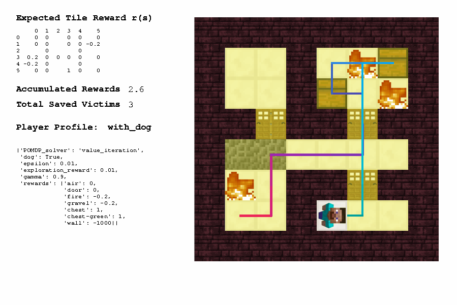
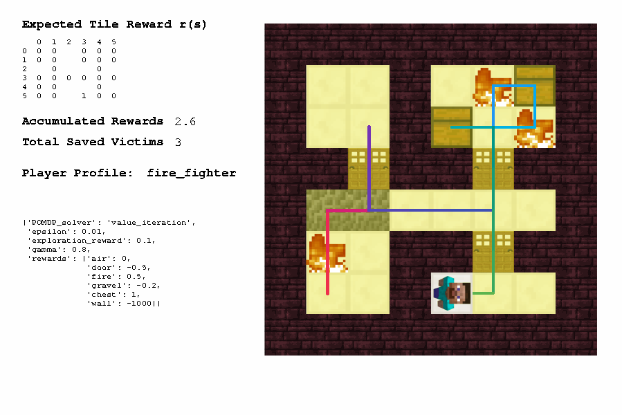
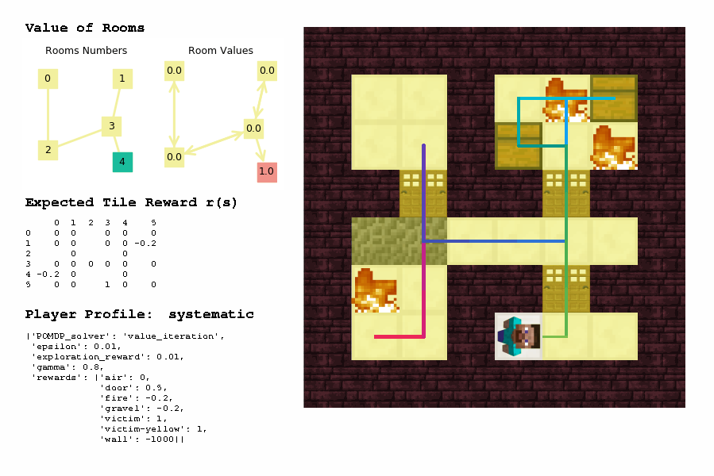
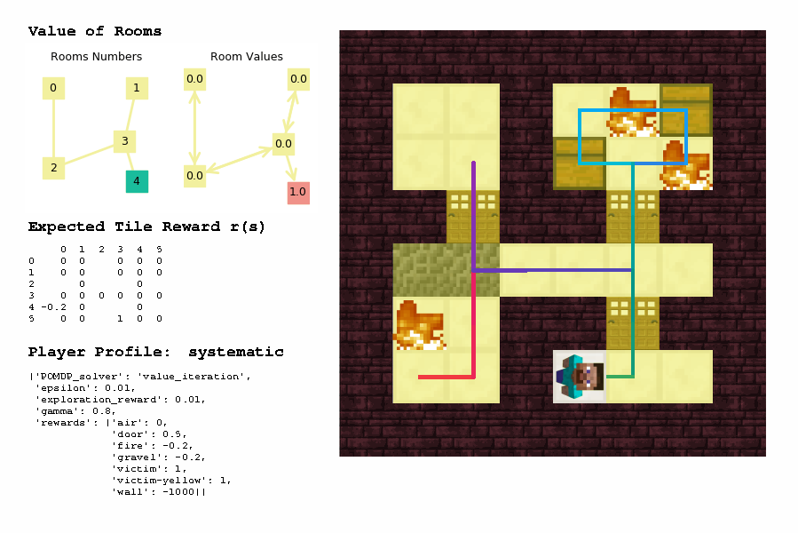
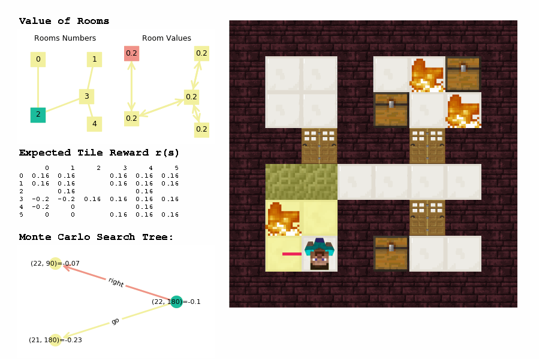
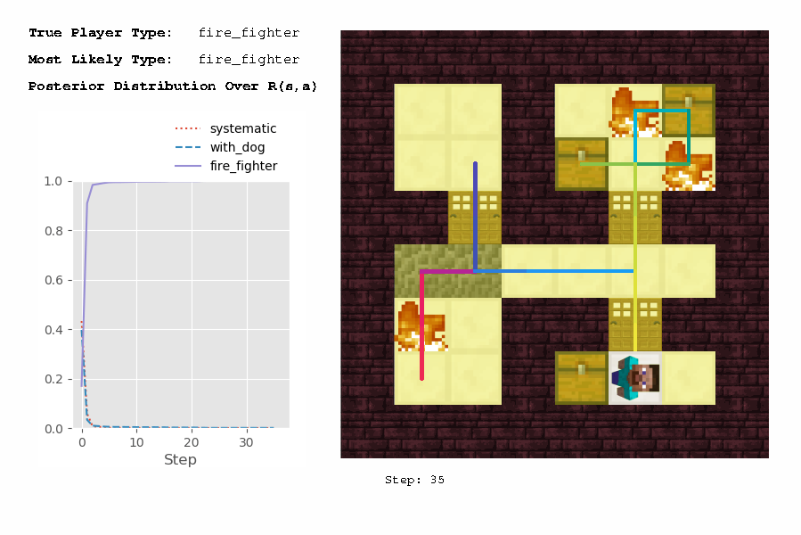
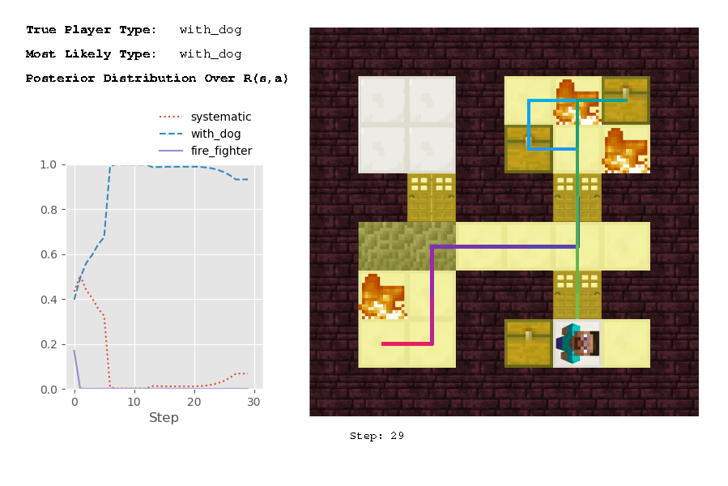
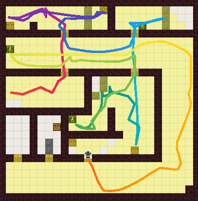

All test cases#
When before pushing changes in the gridworld/ repository or merging the git changes, we need to make sure that all test cases in gridworld/visualize.py can run successfully.
To run the test cases, go to gridworld/visualize.py, and uncomment the MODEs between line 30 to line 41 to test different applications of the gridworld codes.
MODE = 'PLANNING' ## normal VI
# MODE = 'HIERARCHICAL_PLANNING' ## two-level VI
# MODE = 'TILE_LEVEL_DFS' ## VI-DFS
# MODE = 'ROOM_LEVEL_MCTS' ## VI-MCTS
# MODE = 'INVERSE_PLANNING' ## default is two-level VI
# MODE = 'EXPERIMENT_REPLAY' ## visualize human trajectory, generate PNG, or PNGs, or GIF
# MODE = 'REPLAY_IN_MALMO' ## visualize in Malmo environment
# MODE = 'REPLAY_DISCRETIZE' ## generate discretized trajectory file
# MODE = 'EXPERIMENT_PARAM' ## test how parameters affect planning algorithms
# MODE = 'EXPERIMENT_ALGO' ## test how different algorithms affect planning performance
# MODE = 'PRINT_MAP' ## take screenshot of map, random initialize starting location
# MODE = 'LEARNING' ## for reinforcement learning
1. Tabular#
1a. Value iteration (VI)#
Run visualize.py as it is, you will see:

Change PLAYER_NAME in line 62 from 'systematic' to 'with_dog' and 'fire_fighter'
| PLAYER_NAME = with_dog | PLAYER_NAME = fire_fighter |
|---|---|
|  |  |
2. Hierarchical#
2a. VI + VI#
Comment out line 30 and uncomment line 31 # MODE = 'HIERARCHICAL_PLANNING'. Run visualize.py and you will see:

2b. VI + DFS#
Comment out line 31 and uncomment line 32 # MODE = 'TILE_LEVEL_DFS'. Run visualize.py and you will see:

2c. VI + MCTS#
Note: Please skip this one for now as I just created a bug that I need to fix.
Comment out line 32 and uncomment line 33 # MODE = 'ROOM_LEVEL_MCTS'. Run visualize.py and you will see:

3. Inverse planning#
Comment out line 33 and uncomment line 34 # MODE = 'INVERSE_PLANNING'.
Run visualize.py with PLAYER_NAME in line 62 equals to 'fire_fighter' and 'with_dog':
| PLAYER_NAME = fire_fighter | PLAYER_NAME = with_dog |
|---|---|
|  |  |
4. Experiment replay#
This mode visualizes all of the human trajectories (e.g., _player10 shaoying_test2.json) in gridworld/trajectories/24by24/:
